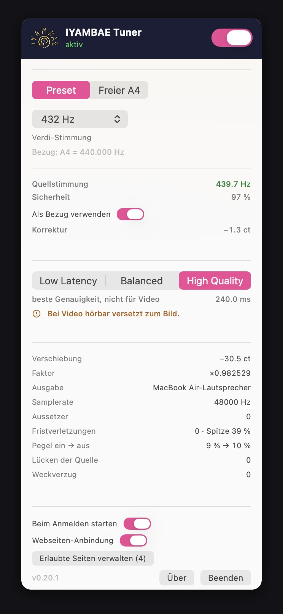

Menüleisten-App · macOS · Windows und Linux in Arbeit
Spotify in 432 Hz. Ohne eine einzige Datei umzuwandeln.
Netflix, YouTube, dein Player genauso. Der Tuner sitzt im Systemton — nicht in der Datei.
Die Probe · kein Download nötig
Musik an, dann von 440 auf 432 ziehen.
Chopin, Nocturne op. 9 Nr. 2 — gemeinfrei. Umgestimmt wird sie hier von demselben Rechenkern, der auch im Tuner sitzt, und zwar in seiner besten Stufe: die Tonhöhe wandert, das Tempo bleibt stehen. Deshalb steht dort 100 %, egal wohin du ziehst. Die Anzeige nimmt an, die Aufnahme liege auf 440 — der Tuner auf deinem Rechner rät nicht, er misst.
Am Telefon gibt keine App den Ton von Spotify oder Netflix heraus.
Und deine eigene Musik?
Zieh eine Datei ins Fenster und du erfährst, auf welchem Kammerton sie wirklich steht. Kostenlos, ohne Konto — und die Datei verlässt deinen Rechner nicht, gerechnet wird im Browser.
So sieht sie aus

Was es tut
Systemweit
Der Ton geht durch den Tuner, bevor er die Lautsprecher erreicht. Auf macOS und Linux.
Jede App
Spotify, YouTube, Netflix, dein Player. Der Tuner sieht den fertigen Klang, nicht die Datei.
Kein Umwandeln
Nichts wird konvertiert, nichts gespeichert. Das Tempo bleibt, wie es ist.
Nachprüfbar
Keine Stimmen, keine Sterne. Nur Messwerte.
Nachprüfbar
Keine Stimmen, keine Sterne. Nur Messwerte.
Es gibt noch keinen einzigen Nutzer — also zitieren wir auch keinen. Was es gibt, sind Zahlen aus dem Bau und aus der Messung. Sie stehen hier mitsamt dem, warum sie zählen.
- 11 ms Verzögerung mit der schnellen Engine Das ist die Grenze zwischen „geht bei Video“ und „geht nicht“: Der Ton bleibt an den Lippen. Wer lieber Klang als Gleichlauf will, schaltet auf die gute Engine — 240 ms, unbrauchbar bei Bild.
- 0 Allokationen im Echtzeitpfad Nicht behauptet, geprüft: Das Bauskript zerlegt die fertige Bibliothek und listet jeden Aufruf, der aus dem Echtzeitpfad herausführt. Es sind keine. Kein Speicher, kein Schloss — und damit nichts, was mitten im Stück knacken kann.
- 88 Tests, 436 Zusicherungen, null Fehler Gebaut auf macOS 26 mit Xcode 26.6. Die Zahl steht hier, weil sie bei jedem Bau neu entsteht — sie ist kein Abzeichen, sondern ein Messwert von heute.
- 432,33 Hz gemessen — drei Systeme, ein Ergebnis 440 Hz hinein, Ziel 432: heraus kommen 432,33 Hz mit der schnellen und 432,09 Hz mit der guten Engine. Auf macOS, auf Linux und auf Windows. Abweichung untereinander: 0,01 Cent.
- 0,09 % eines Prozessorkerns Das 1077-fache der Echtzeit. Der Lüfter merkt nicht, dass etwas läuft, und der Akku auch nicht — es gibt also keinen Grund, den Tuner zwischendurch auszuschalten.
- 0 Anfragen an fremde Server Diese Seite lädt nichts nach: keine Schrift von Google, keine Messung, kein Cookie. Der Tuner verlangt kein Konto, keine E-Mail-Adresse und schickt nichts weg. Du lädst eine Datei, und das war es.
- erkannt
- 443,1 Hz
- Verschiebung
- −43,9 Cent
- Engine
- Delay-Line · 11 ms
Testausgabe · kostenlos · kein Konto · macOS 0.21.1 — Windows und Linux sind gebaut, aber noch nicht so weit
Hol es dir. Dann drei Schritte.
Für dein System noch nicht. Hier steht, wie weit es ist.
Am Telefon geht es nicht. Hier steht, warum.
Testausgabe · kostenlos · kein Konto · macOS 0.21.1 — Windows und Linux sind gebaut, aber noch nicht so weit
Hol es dir. Dann drei Schritte.
Für dein System noch nicht. Hier steht, wie weit es ist.
Am Telefon geht es nicht. Hier steht, warum.
Die App selbst: Menüleiste, greift den Systemton ab und ersetzt ihn. Beim ersten Einschalten fragt macOS nach „Systemaudio aufnehmen“.
Noch ohne Oberfläche — bedient über die Kommandozeile. Im Paket liegt ein LADSPA-Plugin in PipeWires Filterkette und zwei Dienste, die es einschalten. Gebaut für Debian 13. Das Leistensymbol ist geschrieben, aber noch nicht im Paket.
Gemessen über D-Bus: Klick auf „Verdi-Stimmung“ → 432,331 Hz am Ausgabegerät.
Noch nicht zum Herunterladen Sie geht hinaus, wenn sie ein Fenster hat. Ein Paket, das man nur über die Kommandozeile bedient, ist keine Fassung, die man jemandem zum Ausprobieren gibt.
Eigenes Fenster, Leistensymbol, Installer. Installiert ohne Administratorrechte — kein UAC-Fenster, kein Passwort.
Dateien umstimmen läuft. Systemton läuft über ein virtuelles Audiogerät, wenn eines da ist — Windows lässt Mithören zu, aber nicht Ersetzen. Die App sagt dir, was sie auf deinem Rechner kann.
Noch nicht zum Herunterladen Der Abstand zur Mac-Fassung ist zu gross, um sie jemandem in die Hand zu drücken. Sie geht hinaus, wenn er es nicht mehr ist.
Was gleich passiert — auf dem Mac
DMG öffnen, die App in „Programme“ ziehen, doppelklicken.
macOS weist sie ab. Das ist erwartet: Diese Testausgabe ist nicht signiert und nicht notarisiert, und der früher übliche Rechtsklick-Weg hilft seit August 2024 nicht mehr.
Systemeinstellungen → Datenschutz & Sicherheit → „Dennoch öffnen“. Ab da startet sie wie jede andere App. Beim ersten Einschalten fragt macOS nach „Systemaudio aufnehmen“.
Bevor du sie startest
Gebaut und geprüft — 88 Tests, 436 Zusicherungen, null Fehler auf macOS 26 —, aber von einem Menschen noch nicht im Alltag benutzt. Das ist der ehrliche Stand einer Testausgabe.
Die Datei trägt ihre SHA-256-Summe. Rechne sie nach, statt uns zu
glauben: shasum -a 256 auf dem Mac.
Vier Fragen
Was sollen wir als Nächstes bauen?
Vier Fragen
Was sollen wir als Nächstes bauen?
Wir raten ungern. Vier Fragen, keine Anmeldung, keine Adresse — nichts davon lässt sich dir zuordnen. Eine Minute.
Wie hörst du heute in 432 Hz?
Falls überhaupt — „gar nicht“ ist eine gültige Antwort.
Was fehlt dir am meisten?
Das, woran du am häufigsten hängenbleibst.
Hast du für 432-Hz-Software schon einmal Geld ausgegeben?
Gefragt ist, was war — nicht, was wäre. Erinnerungen sind belastbarer als Absichten.
Was würdest du bauen, wenn du könntest?
Freiwillig. Der Satz, der uns am meisten hilft, steht meistens hier.
Danke.
Das fließt in die Entscheidung ein, was als Nächstes gebaut wird.
Kein Problem — auch das ist eine Antwort.
Angekommen ist es leider nicht — der Dienst antwortet gerade nicht. Wenn du magst, schreib es uns über die Kontaktdaten im Impressum.
Wenn du fragst
Alles Weitere, zusammengefaltet.
Wenn du fragst
Alles Weitere, zusammengefaltet.
Abrufbar für den, der fragt. Aus dem Weg für den, der laden will.
Was ist 432 Hz überhaupt?
Ein Kammerton. Er legt fest, wo das a′ liegt, und alles andere folgt daraus. Die Norm sagt 440 Hz; 432 Hz liegt acht Hertz darunter, das sind −31,77 Cent oder knapp ein Drittel Halbton.
Der Tuner verschiebt den ganzen Klang um genau diesen Abstand. Er greift keine einzelnen Töne heraus und verändert an der Musik nichts außer ihrer Höhe.
Woher kommt dann 440 Hz?
Aus einer Verabredung, nicht aus der Natur. Als Alexander J. Ellis 1885 fünfhundert Jahre europäischer Stimmtonhöhen zusammentrug, reichte seine Tabelle von 370 bis 567 Hz — mehr als eine Quinte Spannweite. Der Grund war banal: Orgelpfeifen wurden nach dem örtlichen Längenmaß gebaut, und der „Fuß“ war in Frankreich ein anderer als in Sachsen. Zwischen der Pariser Stimmgabel von 1822 mit 432 Hz und der von 1855 mit 449 Hz liegen dreiunddreißig Jahre — und dieselbe Stadt.
440 stammt von 1834, vorgeschlagen von Johann Heinrich Scheibler, einem Krefelder Seidenfabrikanten. Sein Grund war denkbar unspektakulär: 440 war der Mittelwert, um den Wiener Klaviere zwischen Wärme und Kälte schwankten. Die Konferenz, die daraus 1939 eine Weltnorm machte, tagte im Hauptquartier der BBC und zog 440 der 439 vor, weil 439 eine Primzahl ist und sich aus dem Quarzoszillator der BBC nicht durch Teilerketten erzeugen ließ.
Ausschnitt · 430 bis 450 Hz hier spielt sich heute alles ab
- 415Historische Aufführungspraxis — ein exakter Halbton tiefer
- 432Mailand 1880, die Zahl, für die Verdi eintrat
- 435Diapason normal, Paris 1859
- 440Scheibler 1834 · London 1939 · ISO 16
- 443Deutschland und Österreich, heute üblich
- 445Berliner Philharmoniker unter Karajan
- 449Pariser Stimmgabel 1855
- 470–480Highland-Dudelsack
„Eine Kinderei, die sich fast der Lächerlichkeit preisgäbe.“
Was ist bisher gemessen worden?
Ein randomisierter Vergleich von 432 gegen 443 Hz — also gegen die Stimmung, auf der heutige Orchester wirklich spielen. 43 Personen, jede hörte beides. Bei 432 sank der Puls um drei Schläge in der Minute, bei 443 um einen. Die Pulswellengeschwindigkeit sank nur bei 432. Der Unterschied zwischen den beiden Stimmungen war statistisch belastbar.
Aravena u. a. (2020) verglichen vor einer Zahnextraktion 432 Hz, 440 Hz und Stille; 42 Personen. Beim Speichel-Cortisol lag die 432-Gruppe deutlich niedriger als beide anderen: 0,49 gegenüber 1,35 und 1,59 µg/dL.
Und was dagegen spricht, damit du es nicht woanders erfährst: Es sind kleine Studien, keine Metaanalyse, keine unabhängige Wiederholung. In derselben Untersuchung, die den Puls maß, unterschieden sich die seelischen Werte zwischen 432 und 443 nicht. Und Jebabli u. a. (2025) fanden beim sportlichen Aufwärmen 440 im Vorteil.
Was daraus folgt: Es ist etwas gemessen worden, und es ist wenig. Wir versprechen dir nichts. Die Volltexte stehen unten unter „Was andere dazu schreiben“ — lies sie selbst nach, statt uns zu glauben. Und dann hör hin. Die einzige Messung, die für dich zählt, machst du mit deinen eigenen Ohren.
Verliert Digitales die Welle?
Ein verbreitetes Bild zeigt links eine glatte Welle und rechts eine Treppe. Daraus liest fast jeder: digital ist eckig. Das Bild stimmt — es zeigt nur nicht das Ende.
Die Treppe ist die Zwischenform. Beim Abspielen sitzt hinter dem Wandler ein Filter, und der macht daraus wieder eine durchgehende Kurve. Unterhalb der Grenzfrequenz gibt es genau eine glatte Kurve durch diese Punkte.
Was digital wirklich verloren geht, ist kleiner und langweiliger: ein Grundrauschen aus dem Runden, bei 16 Bit rund 96 Dezibel unter dem Signal — leiser als das Rillenrauschen jeder Schallplatte. Dazu kommen Filternachschwingen und Jitter, beides hörbar nur in schlecht gebauten Geräten.
Wir schreiben das hier hin, obwohl es unserem eigenen Gefühl widerspricht. Wer sagt, er höre bei Vinyl etwas anderes, hat recht — nur liegt es nicht an der Treppe. Es liegt am Schnitt, am Verzerren, das mit der Musik atmet, und daran, dass man eine Platte nicht nebenbei hört.
Ist das ein Medizinprodukt?
Nein. Der IYAMBAE Tuner ist kein Medizinprodukt, kein Heilmittel und kein Therapiegerät. Er ist ein Werkzeug, das Tonhöhe verschiebt.
Er ist nicht dazu bestimmt, eine Krankheit zu erkennen, zu behandeln oder zu lindern, und wir behaupten das nirgends. Wenn dir etwas fehlt, geh zur Ärztin.
Was ist mit 528 Hz und den Solfeggio-Frequenzen?
528 Hz ist kein Kammerton, sondern ein einzelner Ton — ungefähr ein c″. Ein Kammerton legt das a′ fest, alles andere folgt daraus. Der Tuner verschiebt den ganzen Klang um ein Intervall; er stellt keinen Einzelton ein.
Rechnen lässt es sich trotzdem: Wer sein c″ bei 528 Hz haben will, stellt a′ auf 444,0 Hz — das kann der Regler. Bei a′ = 432 Hz liegt dasselbe c″ bei rund 513,7 Hz.
Über die Solfeggio-Reihe selbst sagen wir nichts. Wir kennen keine Quelle dazu, die wir hier guten Gewissens weitergeben würden, und behaupten deshalb weder, dass sie etwas bewirkt, noch dass sie es nicht tut.
Welche Systeme werden unterstützt?
macOS ab 14.4 — die vollständige App in der Menüleiste. Linux mit PipeWire ab 0.3.60 — seit Kurzem ebenfalls mit Symbol in der Leiste: Stimmungen unter Namen, Ein und Aus, Wahl der Engine, Start beim Anmelden. Darunter arbeitet ein LADSPA-Plugin in der Filterkette. Nachgewiesen über D-Bus, der Klick gemessen: „Verdi-Stimmung“ → 432,331 Hz am Ausgabegerät. Gebaut für Debian 13; für Ubuntu und Zorin muss neu gebaut werden.
Unter GNOME braucht das Leistensymbol einmalig die AppIndicator-Erweiterung. Das Paket empfiehlt sie, und das Programm sagt es beim Start — statt unsichtbar zu bleiben und den Eindruck zu hinterlassen, es sei nichts installiert worden.
Windows: Dateien ja, Systemton noch nicht. Es gibt ein eigenes Fenster, ein Leistensymbol und einen Installer ohne Administratorrechte. Umstimmen kann er dort Dateien. Den laufenden Systemton nicht — dafür fehlt das virtuelle Ausgabegerät.
Der Grund für diese Reihenfolge ist technisch: Windows lässt Systemton mithören, aber nicht ersetzen. Wer ihn wirklich ersetzen will, muss selbst zum Ausgabegerät werden. Auf macOS erledigt das die Aufnahmeschnittstelle, auf Linux die Filterkette von PipeWire. Auf Windows braucht es ein virtuelles Gerät — ein eigener Treiber ist der nächste Schritt.
Warum nicht iOS oder Android?
Weil dort die Grenze der Sandbox verläuft, nicht die des Aufwands. Auf iOS gibt es kein Gegenstück in irgendeiner Form. Auf Android darf man fremden Ton nur mitschneiden, wenn die abspielende App es gestattet — und Spotify, Netflix und YouTube gestatten es nicht.
Was möglich wäre, ist etwas anderes: ein eigener Abspieler, der die Musik selbst in die Hand nimmt. Daran wird gedacht.
Warum eine App und nicht einfach eine Webseite?
Weil eine Webseite raten muss und die App messen kann. Eine Seite im Browser nimmt an, die Aufnahme liege auf 440 Hz, rechnet den festen Faktor 432⁄440 und wendet ihn auf alles an. Bei einer Aufnahme, die auf 443 liegt — dem heute in Deutschland üblichen Wert — landet man damit auf 435 statt auf 432.
Der Tuner bestimmt die tatsächliche Stimmung des laufenden Klangs und rechnet den Abstand zum Ziel daraus. Was auf 443 liegt, wird um 443 → 432 verschoben, nicht um 440 → 432. Und er kommt an den Systemton, nicht nur an einen Tab.
- 1,85 %So weit liegt der Zeitdehnungsfaktor von der Identität entfernt. Bei einer Oktave wären es 50 %.
- ±0 %Das Tempo bleibt. Beim bloßen Langsamerabspielen würden aus 120 BPM 117,8.
- 0,09 %eines Kerns bei der schnellen Engine — das 1077-fache der Echtzeit, auf Windows gemessen.
- 0Allokationen im Echtzeit-Rückruf. Nicht behauptet: Das Bauskript zerlegt die DLL und listet jeden Aufruf, der herausführt. Es sind keine.
Wie viel Verzögerung kostet das?
Tonhöhe zu verschieben, ohne das Tempo anzutasten, kostet Zeit — und wie viel, hängt vom Verfahren ab. Du wählst.
- 11 msDelay-Line. Schnell genug für Video und fürs Mitspielen. Der Ton bleibt an den Lippen.
- 240 msHigh Quality (Signalsmith). Klingt besser, ist bei Video aber unbrauchbar — eine Viertelsekunde Versatz sieht man.
Der Umschalter blendet über 25 ms über, damit der Wechsel nicht knackt.
Was hat das mit dem Radio zu tun?
Läuft der Tuner auf demselben Rechner, kann IYAMBAE Radio das bemerken und seine eigene, ratende Umstimmung abschalten. Dann übernimmt die App, die misst.
Gefragt wird dabei zweimal: Die Seite fragt einmal nach, und der Tuner fragt dich. Ohne deine Zustimmung erfährt keine Webseite, dass du ihn benutzt — auch nicht, dass er installiert ist. Eine Liste erlaubter Webseiten im Programmtext wäre bequemer gewesen. Sie hätte nur die falsche Frage beantwortet.
Was kostet es?
Diese Testausgabe kostet nichts. Sie verlangt kein Konto, keine E-Mail-Adresse und keine Zahlungsdaten — du lädst eine Datei, und das war es.
Über einen Preis für eine spätere, fertige Fassung ist nichts entschieden. Wenn sich das ändert, steht es hier.
Was passiert mit meinen Daten?
Diese Seite setzt keine Cookies, misst nichts und lädt nichts von fremden Servern nach. Die Schriften liegen auf demselben Server wie die Seite — ein Verweis auf eine Schriftsammlung in den USA würde deine IP-Adresse dorthin schicken, bevor du irgendwo geklickt hast.
Der Tuner braucht kein Konto und schickt nichts weg.
Er verarbeitet den Ton auf dem Rechner selbst und schreibt ihn nirgends
mit. Die einzige Schnittstelle nach außen ist der Dienst für das Radio
auf 127.0.0.1 — der verlässt deinen Rechner nicht und
antwortet nur, wenn du es erlaubst.
Einzelheiten stehen in der Datenschutzerklärung.
Zum Einordnen
Drei Wege zu 432 Hz.
Zum Einordnen
Drei Wege zu 432 Hz.
Es gibt drei Möglichkeiten, 432 Hz zu genießen. Sie schließen einander nicht aus — sie beantworten verschiedene Fragen.
1 Der Tuner — systemweit
Funktioniert nur an Computern. Jede App, jeder Dienst, ohne eine Datei anzufassen.
Der Stand: Wir warten auf die Developer ID von Apple. In den App Store kann er nicht — dafür sitzt er zu tief im System. Über diese Seite geht es.
2 Player, die im Abspielen umrechnen
Mit jeder DRM-freien Quelle, auch auf dem Handy. Der Haken: Man muss die Musik besitzen und irgendwo liegen haben.
Diese Nachfrage deckt vorerst iyambae.fm ab, was die Radios angeht. Ein eigener Player ist geplant — aber erst, wenn wir wissen, was wir anders und besser machen können.
3 Converter — Dateien dauerhaft umstimmen
Nur mit DRM-freiem Material, und ehrlich gesagt nur bei „lossless“ zu empfehlen: .flac oder .wav.
Was einmal stark komprimiert wurde, müsste beim Umwandeln ein zweites Mal komprimiert werden. Bei „lossless“ wird der Ton einmal neu berechnet — aber nicht ein zweites Mal komprimiert. Darin liegt der Unterschied.
Zunächst liegt der Fokus auf dem Tuner und der Webseite. Nach der Testphase wollen wir die Software zu einem fairen Preis anbieten. Es wird Zeit, dass jeder die Freiheit hat, Musik in der Stimmung zu hören, die er selbst gewählt hat. Wenn das im Alltag schon nicht geht — Telefonklingeln, Türglocken, Kirchenglocken, Sirenen, Kaufhausmusik —, dann wenigstens an den eigenen Geräten.
Fremde Quellen
Was andere dazu schreiben.
Fremde Quellen
Was andere dazu schreiben.
Fremde Seiten, ohne Bewertung weitergegeben. Wir machen uns ihren Inhalt nicht zu eigen; verantwortlich sind ihre Betreiber. Aufgerufen am 21. August 2026.
-
de.wikipedia.org
Kammerton
Enzyklopädieartikel zur Geschichte des Stimmtons.
-
en.wikipedia.org
A440 (pitch standard)
Englischsprachiger Artikel zur Norm 440 Hz.
-
pmc.ncbi.nlm.nih.gov · Volltext frei
Sound interventions tuned to 432 Hz or 443 Hz, Sci Rep 15 (2025)
Randomisierte Cross-over-Studie, 43 Personen, Herz-Kreislauf-Werte.
-
roelhollander.eu
Roel’s World — 432 Tuning
Umfangreiche private Sammlung zu Stimmtongeschichte und Praxis.
-
pmc.ncbi.nlm.nih.gov · Volltext frei
Aravena u. a., J Appl Oral Sci 28 (2020), e20190601
Randomisierte klinische Studie, 42 Personen, Zahnextraktion.
-
pmc.ncbi.nlm.nih.gov · Volltext frei
Jebabli u. a., PeerJ 13 (2025), e19084
Doppelblinde Crossover-Studie, Kickboxen, Aufwärmen.
-
pmc.ncbi.nlm.nih.gov · Volltext frei
Jebabli u. a., Sci Rep 15 (2025), 36120
Doppelblinde Crossover-Studie, Athleten, Aufwärmen.